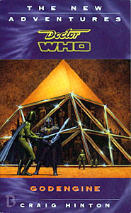

|
GodEngine
|
BASIC PLOT DOCTOR COMPANIONS MATERIALISATION CIRCUIT Pgs 235-236 The ornamental gardens at Jull-ett-eskul. Pg 240 In the ruins of London, 2164 (in the same spot where the Doctor left Susan). PREPARATORY READING CONTINUITY REFERENCES "You're behaving more like Kadiatu all the time, she mused." Roz met Kadiatu in The Also People and Happy Endings. "He jumped to his feet and smoothed down the silvery atmospheric density jacket that he was wearing" The Web Planet. Pg 9 "It could just as easily be Vulcan or Cassius." The Power of the Daleks. "One minute they were flying away from Benny and Jason's wedding in good - if hungover - spirits; the next all hell broke loose." Happy Endings. "The first inkling that something was about to go terribly wrong was the low, insistent chiming of some distant bell deep within the TARDIS" The Cloister Bell (Logopolis). Pg 11 "And if that hasn't got anything to do with the TARDIS's demise, then I'm Rassilon's uncle." The Deadly Assassin et al. "History books referred to it as the Dalek Invasion of Earth, but it had been far, far worse than that." The Dalek Invasion of Earth, unsurprisingly. "The invasion had failed - a genetically engineered virus which feasted exclusively on Dalek wiring had seen to that" Genesis of the Daleks. Pg 12 "Having spent rather too many hours at the bar with a particularly boistrous group at Benny and Jason's wedding, she was beginning to consider them one of the more decent races of ETs." Happy Endings. "The entire race vanished nearly a century ago, at the conclusion of the Thousand Day War." Transit. "Of all the times to end up on Mars, we have to do it without Benny." The first mention of Benny in the context of wishing she was with Mars along with them. I wonder if it'll be the last? Pg 14 "In simple terms, the subspace transit tunnel theyhad attempted to create - a stunnel - had only had an entrance." Transit. There are a number of references to stunnels being used. I haven't noted every one. Pg 15 "The fiasco of the first commercial stunnel run to Arcturus hadn't helpd." Transit (and nice to see that "Arcturus" is spelled correctly). Pg 18 "Christina Madrigal was a decorated veteran of countless campaigns, from the civial wars on the Outer Planets to the colonial struggles in the Arcturus system." The Curse of Peladon, Transit. Pg 20 "So what the frag were you doing in my Transit tunnel?" Transit Pg 21 "It reminded her of the Imperial Landsknecht flitter that had been stolen by a group of joyboys; they had managed to fly it through one of the gravitic beams holding up Overcity Five" Original Sin. "By the time she and her partner Fenn had reached the impact zone, there was nothing left of the occupants" Fenn Martle was Roz's partner before Chris (Original Sin). Pg 25 "The Doctor had called them 'everlasting matches'" Doctor Who in an exciting adventure with The Daleks. "Her Adjudicator's uniform had built-in temperature control and insulation but had she put it back on once they had left Benny's wedding." Happy Endings. "Comfort is the best way to lead an Adjudicator into a sense of complacent; wasn't that what Konstantine had said?" Roz's Adjudicator trainer, who is later mentioned in The Death of Art. Pg 31 "In many ways, she reminded the Doctor of Ace, with all her anger, all her hostility, worn like body armour to protect - or maybe hide - whatever lay beneath." Dragonfire et al. "Too many scientists of the Doctor's acquaintance had either become cynical and jaded or drunk on the power that their discoveries offered; he thought of Maxtible, Kettlewell; even Greel and Davros had once been simple seekers of knowledge." The Evil of the Daleks, Robot, The Talons of Weng-Chiang, Genesis of the Daleks et al. Pg 32 "Mars didn't have a magnetic field, a fact that the Osirians had taken advantage of seven thousand years ago - when they had enslaved Sutekh in Egypt, the stellar power relay had been placed on Mars." Pyramids of Mars. But see Continuity Cock-Ups. "The Doctor repressed a smile; an honorary descendent of Ace, definitely. Then again, given the vagaries of time travel - both his and Dorothee's - it might not be so honorary after all." Ace became a time traveller in her own right in Set Piece. Pg 38 "G'chunn duss Ssethiissi - the Cauldron of Sutekh." Pyramids of Mars. Pg 40 "The curse which had withered the vegetation and wiped out the strange and alien people who had once populated the planet" Possible reference to the aliens from The Ambassadors of Death. "But Cleece was stuck on Mars, while the rest of his race were either dead, in hiding, or starting again on Nova Martia, beyond far Acrturus." Having New Mars and Arcturus be in the same vicinity makes sense from The Curse of Peladon. Pg 47 "Although night had fallen on Mars, they were all carrying powerful torches, except for the Doctor who was relying on a bundle of everlasting matches" Doctor Who in an exciting adventure with the Daleks. Not sure what the "Although" is for, however. Pg 48 "What a shame that he couldn't get the chance to meet Benny" A thirty year old archaologist, who used to travel with the Doctor. "The tablette registers is as solid rock, even down to the traces of trisilicate and iron." The Curse of Peladon. Pg 49 "She was in the atmospheric density jacket that the Doctor had flung at them as the TARDIS broke up" The Web Planet. "It's times like this when I'm really glad of my sonic screwdriver," he said cheerfully. 'I'm just thankful I sued the Terileptils for criminal damage.'" The sonic screwdriver first appeared in Fury from the Deep and was destroyed in The Visitation. The Doctor's line is a play on his line about his scarf in Time-Flight. Pg 52 "A seemingly innocent technician, forced to lend his efforts to the Daleks' war effort, could ensure that their aborted attempt to mine Earth's magnetic core succeeded and guaranteed their sovereignty over the planet." The Dalek Invasion of Earth. "A worse tyrant than Hitler, Green and Williams rolled into one." Uncertain reference. Pg 54 "According to Benny, there had never been any absolute proof that all of the Martians had left for Nova Martia" Fake-credentialed archaeologist who was an expert in Martian culture. Pg 55 "As he did so, he blew out the everlasting matches ." Doctor Who in an exciting adventure with the Daleks. "Of course, the Thousand Day War destroyed most of them." Transit. Pg 56 "Benny would have killed to see what Roz was seeing." Roz met wannabe alcoholic Bernice "Benny" Summerfield in Original Sin. Pg 59 "Erica Dortmun had no excuse for her crass stupidity: she was here as a graduate in subspace mechanics from the University of Greater London, and her father was apparently a renowned scientist back on Earth." The Dalek Invasion of Earth. Pg 61 "Arcturan cities shrouded in methane gave way to the elegant and oxygenated turrets and pillars of Alpha Centauri." The Curse of Peladon, The Monster of Peladon, Legacy. Pg 64 "Oras had always welcomed all comers to his table, even his treacherous brother Ssethiis and his sister=wufe Netyss." These are Horus, Sutekh and Nephthys. The former are from Pyramids of Mars, while the latter is the subject of The Sands of Time, published around the same time. Pg 71 "Then again, the Martians she had met at Benny's wedding had been charm personified." Happy Endings. Pg 72 "Like the Overcities, she thought bitterly." Original Sin. "And it reinforced the feelings she had had at Benny's wedding" Happy Endings. Pg 74 "While studying for her doctorate, Felice had experienced most forms of matter transission - Travel Mat, Transit, stunnel - but this was nothing like any of them." The Seeds of Death, Transit. But see Continuity Cock-ups. Pg 79 "As we now know, the majority of Martians had already left for Nova Martia, a suitable planet on the edge of Arcturan space." The Curse of Peladon. Pg 90 "You're saying that the Martians had an Egyptian-like culture before Egypt itself?" Pyramids of Mars. Pg 92 "He'd been with Roz and a group of Martians at the bar during Benny's wedding reception" Happy Endings. Pg 95 "Despite the friendly demeanour of the Ice Warriors at Benny and Jason's wedding, he knew that their forebears were generally some of the most belligerent, unreasonable and downright vicious bastards in the galaxy." Happy Endings. Pg 96 "Odd; not even a trace of trisilicate." The Curse of Peladon. "Not for the first time since they had arrived on the planet, he cursed the fact that Benny wasn't with them." Oh, so do we, Chris. So do we. ""Even a copy of her seminal work on Mars - 'Down Among the Dead Men' - waould have been welcome, but was sitting on a bookshelf in his bedroom in the TARDIS" First mentioned in Theatre of War. Pgs 96-97 "The square opened in exactly the same way as the previous one - backwards and up - but unfortunately revealed very little" These doors are seen in the last episode of Pyramids of Mars. Pg 100 "Utek-Sak-Oras... the divine Sight of Horus." Pyramids of Mars. "The metallurgy readongs show it as genuine - hand-drawn from an Osirian star-sapphire." Pyramids of Mars. Pg 103 "Why the hell did Benny have to pick this moment to get married, for the Goddess's sake" Happy Endings. "Her knowledge of Martian culture would have proved invaluable in this situation." Really Roz? You're saying that Benny, as an expert, might have been helpful to have had along? And that it's a shame she wasn't? Wow. What an inventive and original thought! Pg 106 "Ancient Humans and Ancient Martians together, exploring the abandoned cities of Mars; now that would have been a honeymoon for Benny!" So, Roz, let me get this straight. You're saying that, as an expert on ancient Martian and human cultures, Benny would have enjoyed this visit? Hmm, maybe I can just about see that... Pg 111 "One day, far in the future, they will become valuable members of the Galactic Federation." The Curse of Peladon. Pg 114 "The bloody skirmishes between the then Bureau of Adjudicators and certain Martian factions in the twenty-first and twenty-second century were required learning on Ponten IV" Original Sin. "A slightly blurry memory of a particular midnight drinking session with Benny came to mind: the topic had been the correct terms of address for Martian rulers." What's that Chris? Information from your friend Benny about Martian culture turns out to be useful? Who'd have thought? Pgs 117-118 "All Martian tchnology is based on trisilicate " The Curse of Peladon. Pg 120 "Underneath their almost philanthropic words lay the battle-hardened Martian psyche that Chris had learnt about in school history lessons and - more entertainingly - from Benny." Noted author of a famous book about the history and culture of Martians, it turns out. Pg 131 "That same ship hitting Earth at lightspeed would be as devastating as the asteroid that had wiped out the dinosaurs ." Earthshock. Pg 133" He owed it all to Falaxyr, and he would have followed him into the sun if ordered." Ironically, this is the fate of his father Slaar, from The Seeds of Death, at the Doctor's hands. Pg 135 "Unlike Slaar, I do not intend to underestimate my opponent." The Seeds of Death. Pg 136 "The Doctor had started playing around with his everlasting matches again" Doctor Who in an exciting adventure with the Daleks. Pg 145 "THE CAULDRON OF SUTEKH" Pyramids of Mars. Pg 149 "There had even been what had initially appeared to be a locket; closer inspection had revelaed that it was a personal shroud field." This item, from the TARDIS kit the Doctor gives Chris, is very similar to the shroud field the Doctor later constructs in The Sound of Drums. Pg 150 "The Daleks and the Cybermen were the pinnacles of this false evolution, having surrendered almost all of their humanity to cold positronic nets of silicon and steel. But other races were catching them up: the Sontarans implanted their clone musters with countless electronic 'improvements', and the Ice Warriors' cybernetic techniques were legendary." The Daleks et al; The Tenth Planet et al; The Time Warrior et al. Pg 153 "The cauldron of Sutekh, according to the Doctor's translation" Pyramids of Mars. "It's the hull of an Osirian WarScarab" Pyramids of Mars. Pg 154 "He destroyed his home planet, Phaester Osiris, and fled the vengeance of his peers." There follows a summary of the backstory of Pyramids of Mars. Pg 157 "She had learnt it twenty-odd years ago on Ponten IV." Original Sin. Pg 158 "Roz then realized where she'd seen the wrist communicator before: in the museum on Ponten IV." Original Sin. Pgs 160-161 "'A Transit-web,' replied the Doctor. 'A portable stunnel terminus.'" Transit Pg 162 "Typical Osirian efficiency." Pyramids of Mars. Pg 165 "Thanks to the deleterious effects of Osirian technology on subspace fields, I narrowly prevented a subspace infarction." Pyramids of Mars. Pg 169 "He died defending the nest on Cluut-ett-Pictar against an Arcturan strike force." The Curse of Peladon. Pg 170 "Not for the first time, she wished that Professor Bernice Summerfield, or Mrs Jason Kane, or Benny Kane-Summerfield, or whatever she was going to call herself, had been with them" It's not the first time? Really? I could have sworn... Pg 171 "Anyway, there was only one Ice Lord on the moon, and that was Slaar." The Seeds of Death. Pg 172 "The little boy inside Chris - the one who had stared out of his bedroom window and dreamed about the Hith dogfights going on, far out in space - just couldn't wait." Original Sin. Pg 174 "She and her partner, Fenn Martle, fighting for truth, justice and the Imperial way." Original Sin. Pg 177 "The Osirians were all alike, Aklaar: selfish and duplicitous. And if they ever deigned to acknowledge you, it was as their servants and inferiors. Horus never uttered a single word that you attribute to him!" Pyramids of Mars. "In four thousand years' time, a liar and a criminal called Maximillian Arrestis will create a religion called the Lazarus Intent, preaching exactly the same holy tenets." The Crystal Bucephalus. Pgs 177-178 "There was the mischevious alien called the Monk who had allied himself with a military nest years ago, and those stories surrounding Grand Marshall Paxaphyr's disastrous attempt to seize control of the human's matter transmission control center on Earth's moon." The Time Meddler et al, The Seeds of Death. Pg 184 "Two of the phials contained chemicals called nitro-twelve and nitro-thirteen" Presumably an outgrowth of Ace's nitro-nine (Dragonfire et al). Pg 186 "The Thousand Day War, and the skirmishes that preceded it, were the last throes of a weak and desperate military." Transit. "So you invaded T-Mat Central on the Moon, and followed up that little debacle by dropping a bomb on Paris." The Seeds of Death, Transit. "I'm sorry Aklaar, but I can't believe the Ice Warriors have changed that much." This continues the Doctor's mistrust of the Ice Warriors, as seen in The Curse of Peladon. Pg 188 "For a moment, she thought about Fenn Martle" Original Sin. "When she finally returned to Earth - as she knew she had to, one day - she would start digging and carry on until the corruption at the core of the Empire was revealed as the rotting canker it was." Preview for So Vile a Sin. Pg 193 "How could McGuire explain what had happened? How he had lost his job as a psychometric assessor at IMC because he had become hooked on Vraxoin just so he could cope with with the agonizing struggle of going from one day to the next ?" IMC appeared in Colony in Space, while Vraxoin was the Mandrel-based drug in Nightmare of Eden. But see Continuity Cock-Ups. Pg 196 "I am sorry to confess that nothing has been as expected since we arrived at the Cauldron of Sutekh." Pyramids of Mars. Pg 200 "Burkitt had taken that as the signal to move in, and fifteen thousand troops had Transitted in" Transit, unsurprisingly. Pg 202 "Thanks to me, the Third Wing of your mighty space fleet flew straight into the sun." The Seeds of Death. Pg 210 "Felice replaced the canopic jar in its appointed place on the lowest level of the Ssor-arr duss Ssethissi - the level of the primary subspace attractor - and checked that the trisilicate cabling was still attached correctly." The Curse and Monster of Peladon. Pg 214 "In three years' time, the invaders will start hollowing out Earth's magnetic core. They fully intend to steal the GodEngine and the fully intend to install it on Earth!" The Dalek Invasion of Earth. Pg 219 "When she had trained to be an adjudicator on Ponten IV, the Greenies weren't considered to be a threat" Original Sin. Pg 222 "Then there is the frightened colony beyond far Arcturus, too ashamed to announce its presence." The Curse of Peladon. Pg 223 "The blood of Warriors flows through him, just as the thin, incompetent blood of Slaar flows through you." The Seeds of Death. Pg 224 "The GodEngine is the product of Martian belligerence and Osirian technology." Pyramids of Mars. "If everything goes according to plan, there won't be so much as a trisilicate diode left after this is played out." The Monstrous Curse of Peladon. "Adjudicator Carmen Santacosta - Oberon Special Operative." The Knights of Oberon featured in Revelation of the Daleks. The fact that adjudicators devolve into them is mentioned in Lucifer Rising (page 51). Pg 226 "The Cauldron of Sutekh." Pyramids of Mars. "The age of the Osirians." Pyramids of Mars. Pg 229 "Cleece watched as Draan, son of Slaar, slumped to the floor and died." The Seeds of Death. Pgs 232-233 "The Doctor reached out with a forefinger and touched it to her forehead and closed his eyes tightly. A second later, Felice relaxed into a deep sleep." Survival. Pg 233 "When the Osirians finally captured the renegade Sutekh on Earth, they needed a powerful stellar relay to keep him imprisoned." Pyramids of Mars. Pg 235 "'Another wedding?' muttered Roz." Happy Endings. Pg 236 "Santacosta's going to try to contact Oberon" Revelation of the Daleks. Pg 237 "I want to find Wolsey - he must have been terrified when the TARDIS was destroyed." The Doctor's cat first appeared in Human Nature. "You have spoken often of your Benny, and of her study of our people." Well, it wasn't all that often, was it? Gosh. Pg 240 "As the last strains of the dematerialising TARDIS echoed around the ruined waterfront, the young woman turned away from her past and buried her tear-stained face in his chest." We have a brief moment at the end of The Dalek Invasion of Earth. Pg 241 "I ruined their chances her on Earth - I and some very special people." The Dalek Invasion of Earth. Pg 242 "Susan's TARDIS key." The Dalek Invasion of Earth. OLD FRIENDS AND OLD ENEMIES Daleks. They're mostly offscreen, as it were, but their invasion fleet appears on page 3 and they're seen in person on page 123. Pg 113 Ice Warriors, including an Ice Lord and a Grand Marshall. Pg 240 Susan Foreman and David Campbell appear briefly. They were last seen in The Dalek Invasion of Earth. NEW FRIENDS AND NEW ENEMIES Sstaal, Esstar, Carmen Santacosta.
CONTINUITY COCK-UPS PLUGGING THE HOLES [Fan-wank theorizing of how to fix continuity cock-ups] FEATURED ALIEN RACES Pg 123 Daleks Pg 139 A rock snake. FEATURED LOCATIONS Pg 2 Mars, 2110 Pg 3 Void Station Cassius, early in 2157. Pg 11 Mars, May 2157. (It's May 7, according to page 28.) Pg 14 Charon, 2157. Pg 240 London, 2164. IN SUMMARY - Robert Smith? |
|
 |